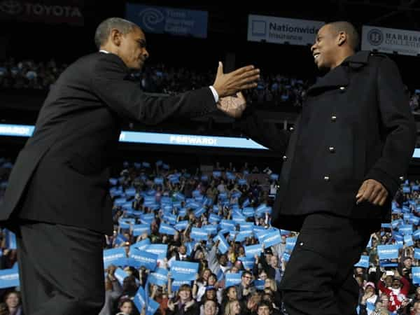

< < < Back
Why Does Jay Z Still Get A Celebrity Pass Compared To Chris Brown? – Return Of Kings
On December 1, 1999, just shy of his 30th birthday, rapper and mogul Jay Z stabbed music executive Lance Rivera in New York City. The reason? Jay Z believed, probably correctly, that Rivera had been bootlegging copies of his studio album, Vol. 3… Life and Times of S. Carter.
Nearly a decade later, on February 8, 2009, then 19-year-old Chris Brown beat up fellow singer Rihanna. While Jay Z is today celebrated as an “icon,” most people see Brown as a pariah.
Working in the same industry, the men’s social reputations are about as starkly different as they could possibly be. For hitting a woman, instead of nearly killing a man with a knife blade, Chris Brown’s name cannot be mentioned without people thinking of Rihanna’s bruises in that photograph. No one, by contrast, remembers what Jay Z did or cares to recall the name of his victim.
The divergent treatment of Jay Z and Chris Brown, especially when you consider the former was a decade older than the latter at the time of their respective deeds, unearths an overt political correctness and ideological bent to the way society shames certain crimes.
The punishments for the men were heavily skewed: Jay Z got a minuscule three years’ probation, Brown five. Inasmuch as Brown committed a crime, stabbing a man in the stomach is objectively worse than beating’s someone face (provided they don’t die or suffer lasting disability).
Crimes against men are deliberately ignored

Maybe Jay Z has some photos of Lance Rivera’s bleeding stomach that he can show us when he’s not chastising Chris Brown?
I will not defend Chris Brown’s actions because they are indefensible. Despite Rihanna clearly not being the innocent but sexualized angel she wants to be perceived as, Brown overreacted and deserved criminal sanction. Unless she struck him first, what he did was nothing but gratuitous and unwarranted assault.
If she did lash out first, which doesn’t seem to have happened, he should have foreseen the personal and legal ramifications of such a response against a woman.
That all said, Jay Z’s actions were more calculated, sadistic and brutal than anything Brown did. Carrying a knife around in Times Square, when Jay Z had never cultivated the actual endangered existence of someone like 50 Cent, unless you count his teenage years more than a decade before, was purely moronic. More moronic (and self-entitled) still was Jay Z’s autobiographical retelling of what happened:
When I told him what I suspected [the bootlegging], to my surprise, he got real loud with me right there in the middle of the club. It was strange. We separated and I went over to the bar. I was sitting there like, “No the fuck this nigga did not…..” I was talking to people, but I was really talking to myself out loud, just in a state of shock. Before I even realized what I was doing, I headed back over to him, but this time I was blacking out with anger. The next thing I knew, all hell had broken loose in the club. That night the guy went straight to the police and I was indicted.
[…]
There was no reason to put my life on the line, and the lives of everyone who depends on me, because of a momentary loss of control….. I vowed to never allow myself to be in a situation like that again.

“Black lives matter,” so why does Obama embrace a guy who stabbed someone over bootlegging CDs?
Here we have a man who had the audacity to question Chris Brown’s actions and perceived lack of contrition regarding attacking Rihanna, even as he himself, ten years after his own “I stabbed someone” incident, still blamed his violence on “blacking out.”
It is laughable that Barack Obama, a preacher of so-called “male responsibility” for absent black fathers, stopping violence against women, and preventing campus “rape,” identifies with and calls himself a friend of a man who has never accepted the gravity of a highly serious but woefully under-punished act of sadism.
Lance Rivera’s problem in 1999 and after was not so much his lack of fame, like Rihanna’s in 2009, but his genitals. Just as Floyd Mayweather is continually (and, in all likelihood, rightfully) taken to task for his abuses of non-famous women, Chris Brown is pilloried for hitting Rihanna. In both of these cases (or sets of cases, as Mayweather is a repeat offender), the victims are female.
Rivera, cursed with a penis, would never receive the same sympathy for himself or anger channelled at his attacker, regardless of if he had died and his intestines had painted 500 cubic feet of the New York City pavement.
“Welcome to the liberal club, here’s your free pass”

Chris Brown committed a crime, plain and simple. But Jay Z’s received a pass usually reserved for violent women.
Aside from the configuration of Lance Rivera’s genitals, there’s another reason why his stabber is granted peace from people bringing up memories of the crime. Jay Z is unabashed about his support for Barack Obama and came out for gay marriage, although, conveniently, only after Obama had himself.
Once you come out as a liberal, there’s no chance of your violent past coming back to bite you. Just ask Sean Penn, who never faced the same sort of scrutiny in the 2000s, after the rapid rise of feminist anti-domestic violence groups, for beating Madonna with a baseball bat in the 1980s.
When you couple Jay Z’s politics with his wife Beyoncé’s status as a “feminist icon,” whatever that means, he is untouchable. Such is his vanity and arrogance, he himself is distinctly unaware of the rank hypocrisy he engaged in when he wanted to crucify Chris Brown for laying a finger on Rihanna.
Jay Z may be a great musician to many, but there’s a strong case to be made that he’s a worse human being than the reviled Chris Brown.
Read More: Why The Media Uses The Death Of Michael Brown To Promote Racial Division